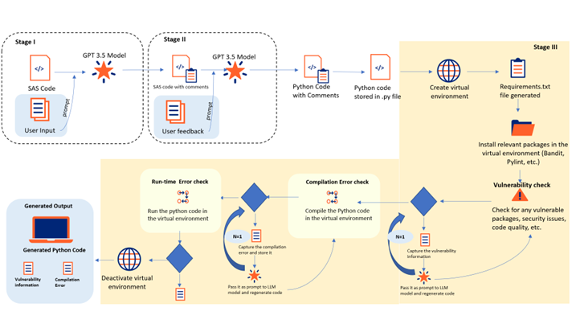
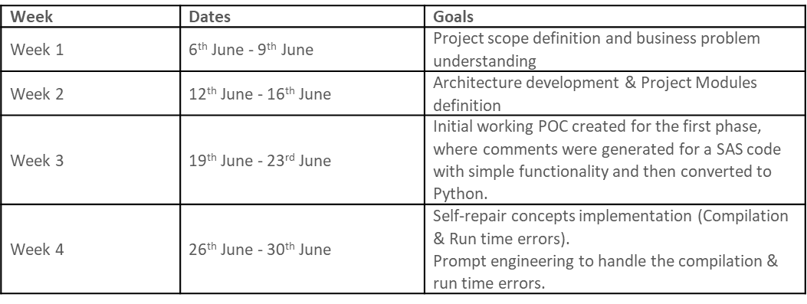

SAS program to Python tool
Contact: Prassanna Venkatesh email / Sandeep Sharma email
Overview
In today's data-driven landscape, organizations are increasingly adopting Python as their primary programming language for data analysis and statistical modeling. Python offers an extensive range of libraries and frameworks, making it a popular choice among data professionals worldwide. However, SAS, with its long-standing history in the analytics domain, still holds a significant amount of legacy code. So, converting SAS code to Python using LLMs gives us the opportunity to modernize our workflows and leverage Python's rich ecosystem.
Many teams at UHG have been using SAS codes for decades and they have been inherited by those teams from long time back. Also, they don’t have enough comments that explain the code structure. In order to give more context, the LLM models can be used to convert the SAS code to Python.
Business Benefits
-
Estimated savings of ~$14 Million annually on the licensing costs of SAS, since Python is open source.
-
Direct positive impact on the work of 22+ teams at UHG that rely on SAS code.
Stakeholders
Business Partners - UHC HCE, EDM / ICRC.
Role of OptumAI
By converting SAS code to Python, OptumAI will help the teams at UHG to reduce their reliance on SAS software and licenses, resulting in cost savings. Also, in addition to automating the code conversion process, OptumAI also comes up with the concept of self-repair that handles and fixes both the compilation and run-time errors in the generated code.
We believe, this solution will support UHG’s Code Modernization efforts, making it easier to maintain, enhance, and integrate the legacy systems with the new systems and technologies.
Solution Approach
Below is a simple representation of our solution architecture.

We propose a three-stage process to migrate the SAS code to Python.
Stage I:
The SAS code, which is the user input is passed as prompt to the LLM along with additional information regarding the code.
Stage II:
The model generates the SAS code with proper comments, that provides better understanding and readability of the code. It also accepts user feedback as a prompt regarding the commented code here.
Stage III:
The model takes the commented SAS code as input along with user input prompt (if any) and passes it to the LLM. Then it generates appropriate python code with proper naming conventions, comments in the code and imports all the necessary libraries. After this, the generated code is corrected through our self-repair mechanism.
Steps in self-repair mechanism:
-
Generated code is saved in a python file.
-
Create a virtual environment, activate it, and then generate the Requirements.txt file (using pip freeze or pipreqs).
- Install relevant packages in the virtual environment (bandit, pylint).
- Check the vulnerabilities in code and code quality using the tools installed.
- Next, we use the generated Requirements.txt file that contains the packages needed to execute the generated python code and install the packages in the virtual environment created. If any vulnerability is found, we pass an input prompt to the LLM to modify the code accordingly.
- In the next step, we check for compilation and run time errors in the code. Once the packages are installed, we compile the generated code. If any error raises, we trace it back, pass the error as prompt to LLM and ask it to regenerate the code.
- If there is no error, we execute the code using exec function and check for run time errors. If no errors are found in the code, we move forward to next steps. If error is found, we use traceback function and pass the error as prompt to LLM. In this phase, we have a Human-In-The-Loop (HITL) mechanism where user can include any instructions if necessary to the model and those instructions will also be included in the prompt.
- Once the code passes all these tests, the virtual environment is deactivated and deleted. The generated code is displayed as output, along with the vulnerability information, and compilation status in the UI.
Weekly Sprint Progress

Reference
Github Repo - click here
Aha Idea - click here